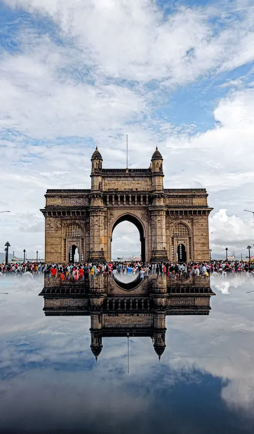

Gateway of India

The Gateway of India is an iconic arch monument situated on the waterfront in South Mumbai, overlooking the Arabian Sea.
Built in 1924, it was constructed to commemorate the visit of King George V and Queen Mary to India.
The structure, designed in the Indo-Saracenic architectural style, stands 26 meters (85 feet) tall and has become a symbol of Mumbai's cultural heritage.
History
The foundation stone of the Gateway of India was laid in March 1913, and the final structure was completed in 1924.
It served as the ceremonial entrance to India for British Viceroys and Governors.
The last British troops to leave India passed through the Gateway in 1948, marking the end of British rule.
Significance
Today, the Gateway of India is one of Mumbai's most popular tourist attractions, drawing visitors from all over the world.
It is a prominent landmark that represents Mumbai's rich colonial history and its status as a vibrant, multicultural city.